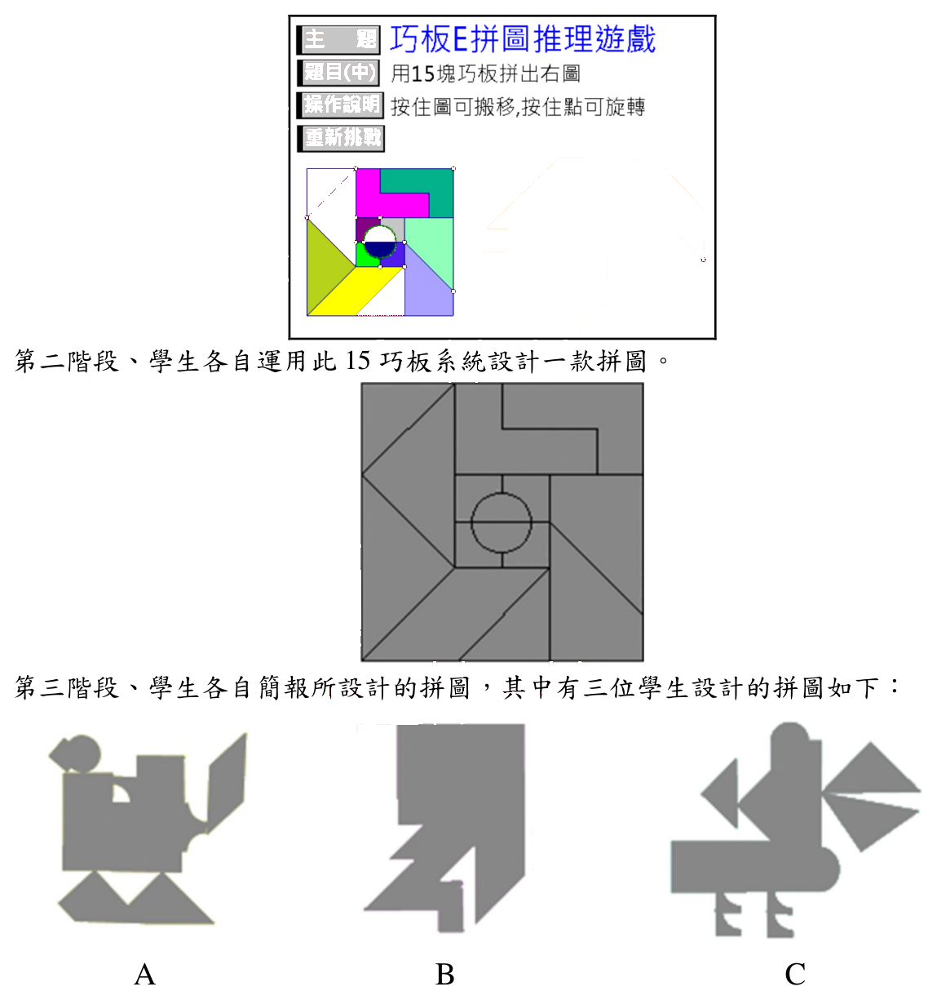

開卷有益 ／
教師檢定 ／ 特教資優・課程教學與評量 ／ 112 年112 年教師檢定特教資優・課程教學與評量試題與答案
這一頁是民國 112 年教師檢定特教資優・課程教學與評量的整份歷屆試題，共 25 題，題目與標準答案出自教育部教師資格考試歷屆試題（受託國立臺灣師範大學心理與教育測驗研究發展中心），其中 25 題附有詳解。以下逐題列出題幹、選項與答案；要計時作答或記錄成績，請用線上練習。
教育部原始場次代碼：tqa11222
線上作答這一科 →
全部 25 題
第 1 題
有關創造力課程設計的描述，下列哪些較為適切？ 甲、須兼顧領域知識、創造思考技巧及有助於創造的情意特質 乙、課程實施歷程應定期監控學生學習成長狀況以利課程調整 丙、課程設計須兼顧擴散性思考及聚斂性思考 丁、透過精熟學習的設計理念以培養學生創造力
（A） 甲乙（B） 甲丙（C） 乙丁（D） 丙丁答案：（B）
詳解與考點 正解：創造力課程設計須兼顧「領域知識、創造思考技巧，以及有助於創造的情意特質」（甲），呼應創造力研究中知識、技巧、動機情意三者缺一不可的觀點；同時也須兼顧「擴散性思考及聚斂性思考」（丙），因為完整的創造歷程須先透過擴散性思考產生大量多元的構想，再透過聚斂性思考篩選、評估並精煉出可行的方案，兩者缺一不可。甲、丙皆為創造力課程設計的核心要素，故選（B）甲丙。
A（甲乙）：乙主張課程實施歷程應定期監控學生學習成長狀況以利課程調整，這雖是良好的課程實施原則，但屬於一般課程發展中形成性評量的通用精神，並非創造力課程設計所特有、須特別強調的核心要素，A因含乙而不夠精確。
C（乙丁）：乙偏重定期監控學習成長以利課程調整，屬於一般課程發展中形成性評量的通用精神，並非創造力課程設計所特有的核心要素；丁主張透過精熟學習理念培養創造力則有誤，精熟學習強調反覆練習至熟練固定內容、達成一致的精熟標準，重視聚斂式、標準化的學習結果，與創造力所需的開放探索、容許多元答案與嘗試錯誤的精神相違背，C因兼含乙、丁而不成立。
D（丙丁）：丙符合創造力課程設計須兼顧擴散性思考與聚斂性思考的原則，但丁主張以精熟學習理念培養創造力，其強調反覆練習至一致精熟標準的取向，與創造力所需的開放探索精神相違背，D因含丁而不成立。
本題考點：創造力課程設計的核心要素。須兼顧知識、技巧、情意三面向（創造力成分論在教育上的應用），以及擴散性思考與聚斂性思考並重的完整創造歷程；並須與精熟學習等強調單一標準答案、反覆練習至一致精熟的教學理念相區辨，後者與創造力培養的開放性精神相違背。
第 2 題
為資優生調整課程的必要性理由，那一項敘述較不適切？
（A） 呼應資優生的情意發展需求（B） 因應資優生較佳的社會適應能力（C） 資優生較能理解複雜且抽象的概念（D） 持續評估學生需求與分析後之決定答案：（B）
詳解與考點 正解：本題問哪一項較不適切作為資優生課程調整的必要性理由。資優生課程調整主要奠基於其認知與情意上的特殊需求，以及持續評估後的專業判斷，而非社會適應能力較佳，資優生認知能力雖超前，但常伴隨情意特質如過度激動、完美主義、與同儕社會情緒發展不同步等，社會適應未必優於一般同儕，甚至可能因情緒敏感度高、興趣與同儕落差大而面臨額外的人際挑戰，以此作為課程調整的理由並不成立，故選B。
A：呼應資優生的情意發展需求，資優生常見的情意特質（如過度激動、完美主義、社會情緒不同步）確實是課程需要因應調整的合理依據，屬於適切理由。
C：資優生較能理解複雜且抽象的概念，是加深加廣式課程設計的核心理由，資優生課程正是為回應其超前的抽象思考能力而調整深度與廣度，屬於適切理由。
D：持續評估學生需求與分析後之決定，符合區分性課程應動態調整、持續回應學生變化的精神，屬於適切理由。
本題考點：資優教育課程調整（differentiation）的合理依據。合理依據應扣緊資優生認知超前（宜加深加廣）與情意特質特殊（宜情意輔導）兩大面向，並輔以持續評估；社會適應能力並非資優生的普遍優勢，不應作為調整課程的理由。
第 3 題
美玲對數字非常敏感，平常喜歡閱讀世界財經新聞，近來美元匯率漲跌幅度過大的狀況，引起她高度的興趣。國小資優班老師想讓她在課後進行加深加廣的學習活動，下列何者較為適切？
（A） 主題探討、學習中心、獨立研究（B） 股市調查、主題研究、遠距教學（C） 買賣外匯、參觀股市、獨立研究（D） 學習中心、函授課程、股市調查答案：（A）
詳解與考點 正解：美玲的興趣聚焦在財經新聞與匯率波動這類具知識探究性質的主題，國小資優班的加深加廣（充實）課程，應在既有學科之上提供適齡、可行、以主題探究為核心的延伸活動，而非涉及實際金錢操作或超出國小學生能力與行為許可範圍的活動。選項（A）「主題探討、學習中心、獨立研究」皆屬資優充實教育常見且適齡的教學型態：主題探討可讓美玲深入探究匯率變動的成因與影響，學習中心提供多元資源供其自主探索，獨立研究則讓她以財經主題進行有系統的深入探究，三者皆聚焦於「探究方法」本身、不涉及實際金錢風險，故為最適切答案。
B：股市調查、主題研究、遠距教學——其中「股市調查」涉及實地或近似實務操作的資料蒐集方式，對國小學生而言在執行上較不具可行性；「遠距教學」則是正式課程的遞送形式（跨校或跨區取得課程資源），性質上較接近學科加速，而非以學生個人興趣為核心的探究式充實活動，與美玲個人化的主題興趣不完全對應。
C：買賣外匯、參觀股市、獨立研究——「買賣外匯」涉及實際金錢交易，國小學生既無相應的資金與法律行為能力，讓學生實際操作貨幣買賣更涉及金錢風險，明顯不適合作為國小資優充實活動，是本題最不適切的選項。
D：學習中心、函授課程、股市調查——「函授課程」屬正式課程加速或跨校資源引入的形式，適用於學科能力已明顯超前、需要加速修習更高階內容的情境，與美玲僅是對特定主題感興趣、需要加深加廣探究的情況不同；「股市調查」則與B選項同樣涉及實務操作的可行性問題。
本題考點：資優教育充實模式（enrichment）與加速模式（acceleration）的區辨。充實模式著重在既有年級架構下，以主題探討、學習中心、獨立研究等方式進行深度與廣度的延伸；加速模式（如遠距教學、函授課程）則是提前修習更高年級或更高階的正式課程內容；作答時須先判斷學生的需求是「深化興趣」還是「加速進度」，並排除涉及實際金錢操作、超出學生行為能力範圍的選項。
第 4 題
資優班張老師在教學中讓學生體驗某一領域專業人士的角色、技巧、思考方式與舉動，以提升學生在該領域的專業表現。此設計較屬於平行課程模式中的哪一種層面？
（A） 核心課程（B） 認同課程（C） 連結課程（D） 實務課程答案：（D）
詳解與考點 正解：平行課程模式（Parallel Curriculum Model, PCM）將課程分為核心課程、連結課程、實務課程與認同課程四個平行成分。題幹描述張老師讓學生體驗某一領域專業人士的角色、技巧、思考方式與舉動，目的在使學生如同該領域的實務工作者一般思考與行動，這正是「實務課程」（course of practice）的核心精神——引導學生運用該領域專業人士的方法與工具解決真實問題，故答案為D。
A：（A）核心課程著重該領域基本概念、原理原則與知識結構的系統性學習，聚焦於「學科知道什麼」，並非模擬專業人士的角色與實作方式，與題幹描述的體驗式學習不符。
B：（B）認同課程重在引導學生反思自己與該領域的關聯，發展個人在該領域中的興趣、價值觀與自我認同，聚焦於「我與這個領域的關係」，而非模仿專業角色本身的技巧與思考方式。
C：（C）連結課程強調跨時間、跨文化或跨領域之間的比較、連結與整合，聚焦於「這個領域與其他領域或時空的關聯」，與題幹單純聚焦於體驗單一領域專業人士角色的描述不符。
本題考點：平行課程模式（Parallel Curriculum Model）四個平行成分——核心課程（學科知識結構）、連結課程（跨領域跨時空連結）、實務課程（專業人士的角色與方法）、認同課程（自我與領域的關聯）——的辨析；作答關鍵在判斷題幹描述的重點是知識內容本身、跨領域連結、專業實作方式，還是自我認同發展。
第 5 題
吳老師進行資優學生的生涯輔導時，同學們各自提出自己的看法，下列哪位學生的生涯信念較不適切？
（A） 甲生：「只有辯才無礙的人才能從商，我是聽障，不適合往這個方面發展。」（B） 乙生：「優秀的女性科學家很少，所以我更有機會在科學研究上出人頭地。」（C） 丙生：「雖然我討厭看到血，但是我還是可以成為一位好的內科醫師。」（D） 丁生：「雖然我看不見，但我可以藉助輔具，幫助我執行律師的工作。」答案：（A）
詳解與考點 正解：甲生說「只有辯才無礙的人才能從商，我是聽障，不適合往這個方面發展」，這句話同時包含兩層錯誤認知：其一，把「從商」窄化為必須具備高度口語表達能力，忽略了經商同樣可透過書面溝通、手語翻譯、文字往來等替代方式進行，並非只有辯才無礙才能勝任；其二，將聽覺障礙直接類化為「不適合從商」的全面性自我否定，未考慮輔助方式與個人其他優勢條件。這種因障礙而不必要地限縮生涯選項的信念，是四位學生中最不適切者，故選（A）。
C：（C）丙生雖然懼血，卻選擇血液接觸相對較少的內科而非外科作為生涯方向，反映的是對自身生理特質與不同醫學專科要求之間的務實媒合，是合理且積極的生涯規劃，並未因單一弱項而全面否定從醫的可能性。
D：（D）丁生雖視障，仍認知可藉助輔具（如語音報讀、點字系統等）完成律師工作所需的閱讀、書寫等任務，顯示他對輔助科技如何彌補感官限制、支持特定職業所需能力有正確且積極的理解，並未因視障而全面否定自己從事律師工作的可能。
B：（B）乙生指出優秀女性科學家人數偏少的現象，並將其轉化為「競爭者少、出人頭地機會較大」的積極詮釋，雖然此推論的因果連結未必嚴謹（人數少也可能反映結構性障礙），但其性質是把客觀現象轉化為正向動機，而非因自身條件而否定自己從事該領域的可能性，與甲生的自我限制信念性質不同。
本題考點：身心障礙資優學生生涯輔導中「不必要的自我限制信念」與「務實生涯媒合」的區辨。輔導重點在協助學生釐清：障礙本身未必等同於特定職業能力的全面欠缺，許多職業能力可透過輔具、替代溝通方式或工作內容調整而達成，過度類化「障礙→不能從事該行業」才是需要介入澄清的不適切信念。
第 6 題
針對資優低成就學生的輔導,某老師提供日常生活案例,協助學生改變自我知覺,強調透過自己努力,未來是可以掌握的;另外也設計活動,增進學生的自我意識,提高自我導向的能力。上述做法未採用哪一項輔導策略?
（A） 治療策略（B） 實質策略（C） 預防策略（D） 支持策略答案：（A）
詳解與考點 正解：題幹描述教師運用日常生活案例，協助學生調整自我知覺（將能否達成目標的信念導向「透過努力即可掌握未來」的積極歸因），並設計活動提升學生的自我意識與自我導向能力，這些做法著重在動機信念的引導與自我覺察能力的培養，屬於預防問題惡化、支持學生正向發展、並針對低成就此一具體實質問題進行處理的介入取向，可分別對應到預防策略、支持策略與實質策略。治療策略則通常指向針對學生已產生之情緒困擾或心理適應問題所進行的臨床式心理治療或諮商介入，題幹所述僅是一般教育情境中的歸因引導與自我覺察活動設計，並未涉及診斷心理問題、進行臨床治療層次的介入，因此治療策略是題幹中「未」採用的策略，故選（A）。
B：實質策略著重直接針對低成就問題本身的具體癥結（如學習方法、任務投入）進行處理；題幹中協助學生建立「努力可掌握未來」的信念，正是針對低成就核心癥結的具體介入，屬已採用之策略，非本題答案。
C：預防策略著重及早介入、避免低成就問題持續惡化；題幹透過日常案例調整學生自我知覺，正是在問題尚可逆轉階段先行介入的預防性作法，屬已採用之策略。
D：支持策略著重營造正向支持的環境與活動，協助學生提升自我意識與自我導向能力；題幹明確提及設計活動增進學生自我意識、提高自我導向能力，正是支持策略的具體展現，屬已採用之策略。
本題考點：資優低成就學生的輔導策略分類。常見架構區分支持策略（營造正向支持環境）、實質策略（處理低成就核心癥結）、預防策略（及早介入防止惡化）與治療策略（處理已產生之心理或情緒問題，需臨床介入）；作答關鍵在於判斷題幹描述的介入內容，是屬於一般教育情境中的引導與活動設計，還是已達臨床治療層次的心理介入。
第 7 題
有關普度三階段充實模式(Purdue Three-Stage Enrichment Model)的敘述,下列哪些較為適切? 甲、此模式透過學生篩選及評量,選擇資優及有創造力的學生 乙、在第一階段的課程強調小組成員問題解決策略的學習 丙、在第二階段的課程重視擴散與聚斂性思考技巧的訓練 丁、在第三階段的課程發展學生研究技巧,進行獨立研究
（A） 甲丙（B） 甲丁（C） 乙丙（D） 乙丁答案：（B）
詳解與考點 正解：普度三階段充實模式（Purdue Three-Stage Enrichment Model，由Feldhusen與Kolloff提出）包含三個階段：第一階段著重擴散性與聚斂性思考技巧的訓練（基礎思考能力的培養）；第二階段著重創造性問題解決能力的訓練（如透過小組合作進行問題解決策略的學習）；第三階段則發展學生獨立研究的技巧，由學生自主選題進行獨立研究。丁「在第三階段的課程發展學生研究技巧，進行獨立研究」正確對應第三階段內容；甲「此模式透過學生篩選及評量，選擇資優及有創造力的學生」則符合資優充實方案篩選對象的一般作法，亦屬適切敘述。甲、丁兩敘述皆正確，故選B。
A（甲丙）：甲之敘述正確，但丙稱「在第二階段的課程重視擴散與聚斂性思考技巧的訓練」誤植了階段，擴散與聚斂性思考技巧的訓練實為第一階段的核心內容，並非第二階段，故A因丙之階段誤植而不成立。
C（乙丙）：乙稱「在第一階段的課程強調小組成員問題解決策略的學習」、丙稱「在第二階段的課程重視擴散與聚斂性思考技巧的訓練」，恰好將第一、二階段的內容對調，擴散聚斂思考訓練實為第一階段核心，問題解決策略的學習則屬第二階段，乙丙兩項敘述均屬階段誤植，故C不成立。
D（乙丁）：丁之敘述正確，但乙稱「在第一階段的課程強調小組成員問題解決策略的學習」，此策略實屬第二階段內容而非第一階段，故D因乙之階段誤植而不成立。
本題考點：普度三階段充實模式（Purdue Three-Stage Enrichment Model）各階段內容的精確對應──第一階段（擴散╱聚斂思考技巧訓練）、第二階段（創造性問題解決策略，常以小組形式進行）、第三階段（獨立研究技巧的培養）；並涉及資優教育方案篩選機制（選擇具資優與創造力潛能的學生）的一般原則。
第 8 題
林老師規劃「時光機」的未來學課程,引導學生思考對未來生活的想像。下列哪些做法較為適切? 甲、探討古今科技演變歷程,請學生思考未來的學習模式 乙、請學生思考人類可能的發展困境,提出非典型的構想 丙、請學生創作一篇「我的志願」,說明未來的人生夢想 丁、利用虛擬實境技術將未來校園以3D立體圖呈現
（A） 甲乙丙（B） 甲乙丁（C） 甲丙丁（D） 乙丙丁答案：（B）
詳解與考點 正解：未來學課程的核心精神在於引導學生系統性思考科技、社會與環境的變遷趨勢，並對未來提出多元、甚至跳脫常規的另類想像與因應方案，而非僅止於個人生涯志向的抒發。甲「探討古今科技演變歷程，思考未來的學習模式」，符合未來學課程以趨勢分析推演未來的精神；乙「思考人類可能的發展困境，提出非典型的構想」，直接呼應未來學課程重視另類思考、跳脫慣性思維的特色；丁「利用虛擬實境技術將未來校園以3D立體圖呈現」，則是運用科技工具具體化學生對未來情境的想像，屬適切的教學手法。甲、乙、丁三者皆切合未來學課程的方法論本質，故答案為B（甲乙丁）。
A、C、D：三個選項依序為甲乙丙、甲丙丁、乙丙丁，皆因含有丙「請學生創作一篇〈我的志願〉，說明未來的人生夢想」而不成立。丙的性質是個人生涯志向抒發的傳統作文題材，著重的是學生個人夢想的表達，而非系統性的未來趨勢分析、情境預測或跳脫常規的另類思考訓練，與未來學課程強調的方法論本質不同。丙容易被誤選，是因為題目本身確實涉及「未來」的想像，〈我的志願〉表面上也談及未來的人生方向，但未來學課程要求的是對科技、社會、環境等宏觀趨勢與困境的系統性推演，並非個人化的生涯志向抒發，兩者層次不同，故凡包含丙的組合（A、C、D）均應排除。
本題考點：未來學（futures studies）課程的教學方法論。核心在於運用趨勢分析（如古今科技演變）、另類與批判思考（如針對發展困境提出非典型構想）、科技工具具體化想像（如虛擬實境呈現未來情境）等方式，引導學生系統性思考未來；須與傳統聚焦個人生涯志向抒發的作文題材（如〈我的志願〉）區辨，前者強調宏觀趨勢推演與方法論訓練，後者僅屬個人夢想表達。
第 9 題
鄭老師運用腦力激盪法,想帶領學生討論澳洲森林大火的原因、對生態的影響與解決方法,下列做法哪些較為適切? 甲、解決方法要有合理性,學生提出的想法避免新奇或獨樹一格 乙、尊重同學對森林大火提出來的各種意見,不要立即給予評價 丙、在思考討論過程中,允許學生結合或修飾別人提出來的想法 丁、為呈現生態影響的多元性,評估時要盡可能保留大家的意見
（A） 甲乙（B） 甲丁（C） 乙丙（D） 丙丁答案：（C）
詳解與考點 正解：腦力激盪法（brainstorming）的核心原則包括：延遲評判（暫緩批評，不在意見產出階段作價值判斷）、鼓勵天馬行空的新奇想法、鼓勵大量產出意見，以及鼓勵結合並改善他人已提出的想法。乙「尊重同學對森林大火提出來的各種意見，不要立即給予評價」正符合延遲評判原則；丙「在思考討論過程中，允許學生結合或修飾別人提出來的想法」則符合以他人想法為基礎進行延伸、再創造的原則。乙、丙兩項皆屬腦力激盪法在「意見產出階段」的核心作法，故選（C）。
A（甲乙）：甲「解決方法要有合理性，學生提出的想法避免新奇或獨樹一格」恰與腦力激盪法鼓勵新奇獨特、暫不論斷合理性的精神相反。腦力激盪法的意見產出階段應鼓勵學生自由聯想、提出天馬行空的構想，若在此階段就要求合理性、排除獨特想法，將提前扼殺創意的產出，因此雖然乙本身適切，甲的錯誤已使選項A不成立。
B（甲丁）：甲之不適切已如前述。丁「為呈現生態影響的多元性，評估時要盡可能保留大家的意見」則混淆了腦力激盪法「意見產出」與「意見評估」兩個不同階段的作法：產出階段確實應保留、不評判所有意見，但進入評估收斂階段後，仍須依合理性、可行性等規準篩選聚斂，而非以保留所有意見為目標，否則將無法產出具體可行的解決方案。甲、丁皆有謬誤，選項B不成立。
D（丙丁）：丙雖為適切作法（如前述），但丁在評估階段仍主張「盡可能保留大家的意見」，未區分產出階段與評估階段的不同要求，屬於評估規準之誤用，選項D因丁之謬誤而不成立。
本題考點：腦力激盪法（brainstorming）的實施原則與階段區分。核心原則含延遲評判、鼓勵新奇構想、鼓勵大量產出、鼓勵結合延伸他人想法；且須區辨「意見產出」（暫緩評判、追求數量與新奇）與「意見評估」（依合理性、可行性等規準聚斂篩選）兩階段任務不同，不可將產出階段的「不評判」原則誤用於評估階段。
第 10 題
李老師帶領資優學生進行「哈利波特」長篇小說的研究,在簡介該小說的情節後,學生兩人一組,共分三組並各自選定:(1)該小說的故事發展脈絡,(2)用字遣詞的精準度,以及(3)與同屬奇幻題材小說「魔戒」的比較進行探究。李老師較可能採取下列哪些區分性教學策略? 甲、分站服務 乙、合約作業 丙、複合式教學 丁、問題本位學習
（A） 甲乙（B） 甲丁（C） 乙丙（D） 丙丁答案：（A）
詳解與考點 正解：李老師將資優學生兩人一組，共分三組，各自選定「故事發展脈絡」「用字遣詞的精準度」「與《魔戒》的比較」三個不同子題進行探究，這種依學生興趣或專長，將全班分成數個小組、各組同時聚焦在不同主題或任務上進行深入探究的安排，符合「分站教學」的精神，即讓不同小組於不同主題或任務上各自運作；同時，各組（各對）學生就其選定的主題自行規劃探究內容與產出，也符合「合約作業」中師生就探究任務與成果預先約定、由學生自主完成的精神，故甲、乙皆符合，選（A）。
B、C、D：三個選項依序納入了丁（B：甲丁）、丙（C：乙丙）、丙與丁（D：丙丁）。「複合式教學」通常指運用多元智能或多重能力任務設計，讓不同能力的學生於同一異質小組中共同參與同一活動、依專長分工，其重點在「同組內」依能力分工完成同一項任務，與題幹三組各自獨立探究不同子題的安排並不相同；「問題本位學習」則強調圍繞一個尚待解決的開放性問題進行探究，而題幹三個子題屬於針對既定文本的分析與比較任務，並非以待解決的問題為核心架構。丙、丁皆不符合題幹描述的教學安排，故凡含丙或丁的選項（B、C、D）均不成立。
本題考點：資優教育區分性教學策略的類型辨析。分站教學（不同小組聚焦不同主題任務）、合約作業（師生預先約定探究任務與規準、由學生自主完成）、複合式教學（同組內依能力分工完成同一活動）、問題本位學習（圍繞開放性問題探究），須依題幹描述的分組方式、任務內容與運作核心，逐一比對何者最貼合。
第 11 題
對於語言和邏輯數學智能為優勢,但人際和內省智能為弱勢的學生而言,哪種方式能同時提升學生的弱勢能力?
（A） 閱讀中西方推理小說後,在班上發表心得（B） 以探索教育的體驗活動,提交一份學習報告（C） 應用電腦軟體製作統計圖,並提出研究假設（D） 將自己設計的桌遊,在小組分享、試玩及改善答案：（D）
詳解與考點 正解：本題依 Gardner 多元智能理論（multiple intelligences），學生語文與邏輯數學智能為優勢，人際（interpersonal）與內省（intrapersonal）智能為弱勢，理想的教學設計應以優勢智能為切入點，同時創造需要與他人互動、且需自我省思的情境，才能真正帶動兩項弱勢智能同步發展。選項 D「將自己設計的桌遊，在小組分享、試玩及改善」中，設計桌遊的規則邏輯運用了邏輯數學與語文優勢作為切入點；「分享、試玩」需要與他人溝通、協調規則、傾聽他人使用後的回饋，運用到人際智能；依回饋「改善」設計，要求學生反思自己原先的設計是否合宜、哪裡該調整，運用到內省智能。三個歷程一次到位，同時觸及人際與內省兩項弱勢智能，故選 D。
A：「閱讀推理小說後在班上發表心得」，發表心得雖是公開口語表達，但性質上仍是個人單向陳述自己的想法，聽者不必然對其產生互動回饋，也未要求學生檢視、調整自己原先的想法，缺乏雙向人際磋商與內省修正的成分。
B：「探索教育體驗活動，提交一份學習報告」，體驗活動本身或許涉及團體互動，但題幹要求的產出僅止於「提交報告」，屬個人書面整理，並未特別設計需要與他人協商、依他人回饋修正的環節，人際與內省的成分皆未被明確要求。
C：「應用電腦軟體製作統計圖，並提出研究假設」，此選項完全落在邏輯數學與語文既有優勢智能的操作範圍內，既不涉及與他人的合作或磋商，也未要求學生反思自身想法，對弱勢智能沒有提升作用。
本題考點：Gardner 多元智能理論（Theory of Multiple Intelligences）中人際智能與內省智能的界定，以及優弱勢智能互補教學設計原則——以優勢智能為工具、創造弱勢智能必然被使用的活動情境，而非直接迴避弱勢智能或僅停留在優勢智能的操作內。
第 12 題
游老師指導學生進行獨立研究,發現小君在決定研究主題時,感到困難並遲遲無法決定。以指導獨立研究的理念,哪些做法較為適切? 甲、接納學生想法,協助分析可能的問題或提醒可能的困難 乙、準備幾個備用題目,當原本主題窒礙難行時供學生選擇 丙、安排多元探索活動,結合校內外資源,讓學生找到主題 丁、運用澄清法與決定技巧,引導學生自我檢視以決定主題
（A） 甲乙丙（B） 甲乙丁（C） 甲丙丁（D） 乙丙丁答案：（C）
詳解與考點 正解：指導資優學生獨立研究時，強調學生對研究主題應具有自主性與擁有感，教師角色在於引導學生自我探索、釐清想法，而非直接代為決定主題。甲「接納學生想法，協助分析可能的問題或提醒可能的困難」尊重學生原有的構想，僅提供分析與提醒；丙「安排多元探索活動，結合校內外資源，讓學生找到主題」透過拓展接觸面協助學生自行發掘主題；丁「運用澄清法與決定技巧，引導學生自我檢視以決定主題」透過技巧引導學生自主做出決定；三者皆是協助學生自主發展並確立主題的作法，尊重學生的主體性，故甲丙丁正確，選（C）。
A（甲乙丙）、B（甲乙丁）：（A）與（B）都納入了乙「準備幾個備用題目，當原本主題窒礙難行時供學生選擇」。乙看似貼心提供備援，實則是由教師預先設定選項讓學生被動挑選，將剝奪學生自主探索與決定主題的歷程，與獨立研究強調學生自主性與問題擁有感的精神相違背；此作法容易因立意良善、協助學生度過卡關而被誤判為適切，實則混淆了提供資源協助探索與直接代為框限選項兩種性質不同的介入方式。
D（乙丙丁）：（D）排除了甲，卻仍納入乙。甲接納學生想法、協助分析問題是指導獨立研究時最基礎的態度——先尊重學生原有構想，而非略過此步驟直接安排探索活動或決定技巧；且同樣因納入乙而不適切。
本題考點：資優教育獨立研究指導中的自主性原則。教師的角色應是引導者而非決定者，適切做法著重接納、拓展、引導學生自主決定，而非預先設定選項供學生被動選擇；辨析關鍵在於該作法是保留學生自主決定的空間，還是由教師代為框限或決定。
第 13 題
陳老師在資優班開設未來學課程,帶領學生探討未來社會可能出現的假新聞事件、偽科學報導等問題,思考如何透過更高端的科技因應人工智能帶來的挑戰,並請學生運用「六頂思考帽」,提出可能的解決方法。陳老師的規劃方式,可以達成下列哪些教學成效? 甲、溝通協調 乙、創造能力 丙、領導才能 丁、邏輯思考
（A） 甲乙（B） 甲丙（C） 乙丁（D） 丙丁答案：（C）
詳解與考點 正解：「六頂思考帽」（Six Thinking Hats）是Edward de Bono提出的結構化思考策略，以白、紅、黑、黃、綠、藍六種顏色分別代表事實資料、直覺情緒、風險疑慮、正面效益、創意可能性與思考歷程掌控六種角度，藉由輪流切換角度，引導個人或團體有系統地進行分析與創意發想。題幹中陳老師讓學生思考如何以科技因應人工智慧帶來的挑戰，並運用六頂思考帽提出解決方法，學生須在白帽（事實）、黑帽（風險）、黃帽（效益）等角度下進行邏輯分析與評估（對應丁「邏輯思考」），並在綠帽（創意）角度下發想新穎的因應方案（對應乙「創造能力」），故此教學設計主要達成的成效為乙、丁，即選項C。
A：（A）甲乙，甲「溝通協調」並非六頂思考帽的設計重點——六頂思考帽是引導「個人或小組依序切換思考角度」的結構化思考工具，重點在思考歷程本身的系統化，而非成員間的分工協調或人際溝通技巧，故甲不成立，A不成立。
B：（B）甲丙，甲「溝通協調」如上述不成立；丙「領導才能」同樣非六頂思考帽的核心訓練目標——此工具並未要求學生扮演團隊領導者、帶領他人分工執行，而是聚焦於個人或團體共同依序切換角度思考，故丙亦不成立，B不成立。
D：（D）丙丁，丁「邏輯思考」成立（詳見正解），但丙「領導才能」不成立已如上述，故D不成立。
本題考點：六頂思考帽（Six Thinking Hats）的設計原理與其能培養的思考能力——以角色化的顏色帽子引導使用者切換觀點，兼顧事實蒐集、風險評估、正面效益、創意發想與歷程掌控，藉此同時訓練邏輯分析與創造思考；此工具聚焦「思考角度的系統切換」，並非以培養溝通協調或團隊領導能力為主要目的。
第 14 題
丁老師以「資優你我他」為主題規劃情意發展課程,下列哪些課程設計原則較為適切? 甲、情意乃為他人著想之同理心,課程目標皆需對應「社會參與」之面向 乙、採用案例學習教學法,以「跟同學常發生的衝突」進行探討,發展換位思考的態度 丙、引導學生發表感興趣的現象或事件,並了解同學各自關注的焦點 丁、單元結束前,帶領學生評估人際衝突的解決策略與過程
（A） 甲乙丙（B） 甲乙丁（C） 甲丙丁（D） 乙丙丁答案：（D）
詳解與考點 正解：資優生情意教育課程涵蓋自我了解、人際關係、社會覺察等多重面向，並非僅侷限於同理他人的社會參與單一向度。乙「採用案例學習教學法，以跟同學常發生的衝突進行探討，發展換位思考的態度」、丙「引導學生發表感興趣的現象或事件，並了解同學各自關注的焦點」、丁「單元結束前，帶領學生評估人際衝突的解決策略與過程」，三者皆為具體可行、聚焦學生真實人際情境的情意課程設計方式，涵蓋案例探討、興趣分享與歷程評估等多元教學方法，故選D（乙丙丁）。
A、B、C：三個選項皆包含甲「情意乃為他人著想之同理心，課程目標皆需對應社會參與之面向」，此一主張將情意教育窄化為單一的社會參與面向，忽略了自我概念建立、情緒覺察與管理等同樣重要的情意課程內涵，過度限縮了情意教育的範疇，故含甲的選項皆不成立；三者僅差別在於各自搭配乙丙丁中的兩項適切設計（A搭配乙丙、B搭配乙丁、C搭配丙丁），但皆因納入甲而不成立。
本題考點：資優生情意教育（affective education）課程設計的多元面向。情意教育涵蓋自我了解、情緒管理、人際關係與社會覺察等面向，不應窄化為單一的同理心或社會參與；適切的課程設計應以真實情境為素材，並涵蓋歷程反思與策略評估，而非預設單一僵化的課程目標框架。
第 15 題
國小資優學生小彤, 常覺得校內課程缺乏挑戰性, 上課不專心聽講; 每次考試都臨時抱佛腳, 以致課業表現低落; 情緒敏感易怒常與同學發生衝突, 人際關係欠佳。有關小彤的教學輔導措施, 下列哪些較為適切? 甲、調整教室環境減少干擾,加強專注力訓練 乙、規劃情意與學習策略課程加強情緒管理與自我效能 丙、加強矯正欠佳的人際關係,以利班級經營 丁、實施差異化教學,提高小彤的學習興趣
（A） 甲丙（B） 甲丁（C） 乙丙（D） 乙丁答案：（D）
詳解與考點 正解：本題需先精準診斷小彤的問題成因：其一，「不專心聽講」肇因於現有課程缺乏挑戰性，而非注意力本身缺陷；其二，「臨時抱佛腳、課業低落」與「情緒敏感易怒、人際欠佳」，共同指向資優生常見的情意調適與後設學習策略不足。丁「實施差異化教學，提高小彤的學習興趣」直接對症課程缺乏挑戰性此一根本原因；乙「規劃情意與學習策略課程，加強情緒管理與自我效能」則對症其讀書方法欠佳與情緒調節不足。兩者皆對症根本成因，故正確組合為乙、丁，選（D）。
A（甲丙）：甲「調整教室環境減少干擾，加強專注力訓練」把不專心當成單純的專注力缺陷加以訓練，忽略其根源其實是課程挑戰性不足，屬治標不治本；丙「加強矯正欠佳的人際關係，以利班級經營」是以方便教師管理班級為出發點矯正學生行為，而非回應小彤情緒調節的真實需求，兩者皆未對症，故（A）不適切。
B（甲丁）：丁雖為正確措施，但甲仍是把「不專心」誤判為注意力缺陷，未觸及課程缺乏挑戰性此一根本原因，故（B）因甲不適切而整體不成立。
C（乙丙）：乙雖為正確措施，但丙同樣是以教師班級經營便利為考量矯正人際關係，而非以理解小彤情緒敏感的根源為核心進行輔導，故（C）因丙不適切而整體不成立。
本題考點：資優生雙重特殊需求的輔導原則。診斷行為問題須追溯根本成因而非表面現象（不專心≠專注力缺陷）；資優生的情意教育著重自我效能與情緒調節；課程回應則以差異化教學提供適配挑戰，三者為資優教育輔導的核心切入點。
第 16 題
張老師想以空氣污染為議題, 引導學生進行批判思考。他找到幾篇 PM 2.5 空氣污染會提高罹癌風險的報導, 讓學生延伸討論。下列哪些作法為批判思考教學策略? 甲、讓學生思考並釐清空氣污染指數與健康的關聯 乙、鼓勵學生以實際行動改善社區空氣污染的問題 丙、讓學生分析報導者的立場以評估報導的公正性 丁、整理文獻,彙整所蒐集的空氣污染之數據資料
（A） 甲乙（B） 甲丙（C） 乙丁（D） 丙丁答案：（B）
詳解與考點 正解：批判思考教學著重引導學生分析論證、釐清概念，並評估證據與資訊來源的可信度與立場，而非僅止於資料蒐集或直接訴諸行動。甲「讓學生思考並釐清空氣污染指數與健康的關聯」，要求學生檢視污染指數與健康風險之間的因果或相關性論證是否成立，屬於批判思考中釐清概念、檢驗論證邏輯的核心作法；丙「讓學生分析報導者的立場以評估報導的公正性」，則直接對應批判思考中評估資訊來源可信度與潛在偏見的重要環節，兩者皆是批判思考教學的具體展現，故選（B）甲丙。
A（甲乙）：甲如前述屬批判思考的核心作法，但乙「鼓勵學生以實際行動改善社區空氣污染問題」偏重公民行動與服務學習，是在完成分析評估之後的實踐落實層面，並非批判思考（分析、評估、判斷）本身的認知歷程，故此組合仍因乙不當而不成立。
C（乙丁）：乙如前述偏向行動實踐，而非批判思考的分析評估歷程；丁「整理文獻，彙整所蒐集的空氣污染之數據資料」則屬於資料蒐集與整理的研究基本功，尚未進入批判思考所要求的分析論證或評估來源可信度的階段，兩者皆非批判思考教學策略的直接展現。
D（丙丁）：丙如前述屬批判思考的核心作法，但丁如前述僅止於資料的蒐集彙整，尚未進行分析、評估或判斷，故此組合仍因丁不當而不成立。
本題考點：批判思考（critical thinking）教學的核心歷程。批判思考強調對資訊來源、立場與論證邏輯進行主動分析與評估，而非僅止於資料蒐集（丁）或轉化為具體行動（乙）；解題須辨別選項描述的活動是屬於「分析評估」的認知歷程，還是「蒐集資料」或「行動實踐」等其他階段的活動。
第 17 題
陳老師運用評分規準(rubrics)做為資優學生在奇幻故事創作表現的評量工具。下列建立評分規準步驟的順序,何者較為適切? 甲、透過預試階段,老師反覆評估作品的表現並調整評分規準 乙、老師與學生針對各學習表現向度的內容,共構各分數等級的敘述 丙、進行學習內容與預期成果的分析,作為主要達成的學習表現向度 丁、依據學生能力現況、需求及提供多樣作品範本,歸納分析並具體描述學習表現向度的範圍
（A） 甲乙丙丁（B） 丙甲乙丁（C） 丙丁乙甲（D） 丁乙丙甲答案：（C）
詳解與考點 正解：建立評分規準（rubrics）的合理步驟，應依「先確立方向、再具體描述、後共構規準、終預試修正」的邏輯漸進：首先進行學習內容與預期成果的分析，確立主要達成的學習表現向度（丙）；接著依學生能力現況、需求，並參考多樣作品範本，歸納分析並具體描述各學習表現向度的範圍（丁）；再由老師與學生針對各向度的內容，共同建構出各分數等級的具體敘述（乙）；最後透過預試階段，反覆評估作品的實際表現並據以調整規準（甲），故合理順序為丙→丁→乙→甲，選C。
A（甲乙丙丁）：把預試修正步驟（甲）誤置為第一步，但預試必須在規準已具雛形之後才能實際操作，邏輯上不可能發生在確立學習表現向度（丙）之前，此排序違反了建立規準應有的先後邏輯。
B（丙甲乙丁）：雖以丙（確立向度）為起點正確，卻把預試修正（甲）錯置於乙（共構等級敘述）與丁（描述向度範圍）之前，等於規準的具體敘述都尚未共構完成，就先拿去進行預試評估，順序顛倒。
D（丁乙丙甲）：跳過應優先進行的「丙：學習內容與預期成果分析、確立主要學習表現向度」這一步，直接從「丁：具體描述向度的範圍」開始，忽略了向度範圍的描述必須奠基於學習內容分析所得出的向度之上，缺乏邏輯前提。
本題考點：評分規準（rubrics）建立的步驟邏輯。合理流程依序為：分析學習內容與預期成果以確立表現向度→依學生能力與範本具體描述向度範圍→師生共構各分數等級的敘述→透過預試反覆評估並調整規準；核心原則是「先方向、後細節、再共構、終校準」，每一步驟皆須以前一步驟的成果為基礎。
第 18 題
有關運用良師典範制度於特殊族群資優學生所產生的效益,下列哪些敘述較為適切? 甲、配對不同性別的良師,對學生的自我概念與生涯抉擇較有幫助 乙、身心障礙資優學生可透過有意義的學習經驗和角色認同獲益 丙、可改變文化殊異資優學生的文化認同,以破除社會對其刻板印象 丁、經濟弱勢資優學生可獲得相似背景的成功典範與生涯探索等機會
（A） 甲乙（B） 甲丙（C） 乙丁（D） 丙丁答案：（C）
詳解與考點 正解：乙、身心障礙資優學生可透過有意義的學習經驗和角色認同獲益——良師典範制度讓身心障礙資優生有機會接觸與自己特質相近、同樣具身心障礙卻能有所成就的楷模，藉此建立正向角色認同、看見自身可能性；丁、經濟弱勢資優學生可獲得相似背景的成功典範與生涯探索等機會——同樣是藉由配對背景相似的良師，讓弱勢資優生看見「和自己出身相似的人也能成功」，進而拓展生涯視野。兩者皆符合良師典範制度扶助特殊族群資優生的正向論述，故答案為（C）乙丁。
A（甲乙）：乙已於正解說明為正確；甲、配對不同性別的良師，對學生的自我概念與生涯抉擇較有幫助，實則相關文獻多指出配對相似背景（含同性別）的良師，較有助於學生建立認同與投射，刻意配對不同性別反而可能削弱角色認同與學習楷模的效果，此敘述與一般良師典範制度的配對原則相反，故甲不成立，A不成立。
B（甲丙）：甲已於上段說明其錯誤；丙、可改變文化殊異資優學生的文化認同，以破除社會對其刻板印象，這項主張看似正向，實則與多元文化教育強調「肯定並強化學生原有文化認同」的原則相悖——良師典範制度的用意應是協助文化殊異資優生穩固自身文化認同、建立自信，而非「改變」其文化認同去迎合主流社會，故丙屬似是而非的錯誤選項，B不成立。
D（丙丁）：丁已於正解說明為正確；丙已於上段說明其錯誤所在，方向與丁不同，故D不成立。
本題考點：良師典範制度（mentorship）對特殊族群資優生的效益，以及多元文化教育的核心原則。良師配對應以背景相似（含性別、身心特質、文化、社經背景相近）為原則，藉此強化角色認同與生涯探索；面對文化殊異學生，教育應致力於肯定並強化其原有文化認同，而非試圖改變或同化，才能真正破除社會對其的刻板印象。
第 19 題
資優班蔡老師發現小杰對天文有濃厚興趣,鼓勵小杰在興趣中心進行天文研究, 並連結線上資源供其學習。蔡老師評估了小杰的學習情形後,認為適合進行 D. Treffinger 自我引導學習模式的「自我引導層次二」。何者較符合此層次的學習任務?
（A） 蔡老師評估小杰對天文主題的能力和興趣後,提供一些線上天文學習資源,供其選擇（B） 蔡老師評估小杰的能力和興趣後,為其訂定天文研究學習目標並提供所需的線上資源（C） 蔡老師請小杰自訂天文研究學習計畫、目標及研究進度,並自主蒐集所需線上資源（D） 蔡老師與小杰共同擬定天文研究學習目標,並討論線上資源的選擇標準與學習方式答案：（A）
詳解與考點 正解：D. Treffinger自我引導學習模式（Self-Directed Learning Model）依教師主導程度遞減、學生自主程度遞增，將學習歷程分為四個層次。層次二的特徵是：教師仍主動評估學生的能力與興趣，並依評估結果預先篩選、提供有限範圍的資源，學生的自主權僅止於在教師已設定的選項範圍內進行選擇。蔡老師評估小杰對天文的能力與興趣後，提供數項線上天文學習資源供其挑選，正符合層次二「教師篩選資源、學生於範圍內選擇」的定義，故選（A）。
B：蔡老師逕自訂定學習目標並提供所需資源，小杰在目標設定與資源選擇上毫無置喙空間，決策權完全由教師主導，屬於自主程度最低的層次一。
C：小杰自訂學習計畫、目標及研究進度，並自主蒐集所需的線上資源，教師幾乎退出決策歷程，僅居於資源提供者或必要時的協助者角色，屬於學生自主程度最高的層次四。
D：蔡老師與小杰共同擬定學習目標，並討論資源選擇的標準與學習方式，決策權由師生協商共決、雙方地位相對平等，屬於層次三。
本題考點：Treffinger自我引導學習模式的四個層次。核心判準在於「決策權從教師逐步移轉至學生」的程度：層次一（教師全權決定）→層次二（教師篩選、學生於範圍內選擇）→層次三（師生共同協商決定）→層次四（學生自主決定，教師僅提供必要協助）；作答須辨識目標設定與資源選擇這兩項決策，究竟是由教師單方決定、教師提供選項、師生協商，還是學生自主決定。
陳老師於創造力課程中,帶領學生運用動態幾何軟體(Geometer's Sketchpad, GSP), 研發「巧板模組拼圖推理遊戲」,他將教學分為三個階段: 第一階段、引導學生運用 GSP 製作一個線上 15 巧板系統,如下圖: 第二階段、學生各自運用此15巧板系統設計一款拼圖。 第三階段、學生各自簡報所設計的拼圖,其中有三位學生設計的拼圖如下:
第 20 題
陳老師請四位學生評述A、B、C三款拼圖的難易層次並說明理由。根據以下四位學生的答案，何者最為正確？ 甲生、難易層次 A > C > B，理由：圖形比較容易判斷設計什麼 乙生、難易層次 B > C > A，理由：圖形的暗示性高，難度低 丙生、難易層次 C > A > B，理由：圖形最複雜，難度最高 丁生、難易層次 B > A > C，理由：圖形連成一大塊，難度最高

（A） 甲生（B） 乙生（C） 丙生（D） 丁生答案：（D）
詳解與考點 正解：拼圖類推理教材（如七巧板／益智拼板）的難易判準，關鍵不在於圖案本身複不複雜、好不好認出畫的是什麼，而在於拼片組合後外框輪廓能提供多少「可供切割定位」的線索——外框凹凸分明、缺口清楚者較易辨識拼片邊界；外框渾然連成一大塊、缺乏內部分割提示者，學生難以判斷拼片如何切分或組合，難度也最高。丁生正是以「圖形連成一大塊，難度最高」作為判準，據此推得B難度最高，論證方式切中此類教材難度設計的核心原理，故選丁生（D）。
A（甲生）：以「圖形比較容易判斷設計什麼」作為難度依據，把「整體圖案是否容易辨認」等同於「拼片邊界是否容易辨認」，兩者是不同的構念——即使一眼認出圖案畫的是什麼，仍可能因外框缺乏缺口提示而難以拆解或組合，判準錯置。
B（乙生）：以「圖形的暗示性高，難度低」為依據，方向雖與難度判準大致相符（暗示性越高、難度越低），但通篇未具體說明暗示性應從外框的哪個特徵判斷，論證缺乏可操作的具體依據，流於空泛。
C（丙生）：以「圖形最複雜，難度最高」為依據，把圖案細節的複雜度直接等同於拼片難度，同樣混淆了「圖案好不好看懂」與「拼片好不好拆解定位」兩個不同的問題，並非此類教材難度設計的核心判準。
本題考點：七巧板／益智拼板類教材的難度設計原理，核心在於拼片組合後外框輪廓所提供的分割線索多寡（外框缺口、凹凸提示），而非圖案內容的複雜度或可辨識度；本題亦涉及創造力課程中運用動態幾何軟體（GSP）進行圖形設計與教材難度評鑑的能力。
第 21 題
下列哪一選項最適合陳老師三階段教學的評量模式？
（A） 診斷評量（B） 實作評量（C） 動態評量（D） 靜態評量答案：（B）
詳解與考點 正解：由本文可知，陳老師的教學分三階段：第一階段引導學生實際操作GSP軟體建置15巧板系統，第二階段學生運用此系統實際設計一款拼圖作品，第三階段學生完成具體的拼圖成品並公開簡報成果。三個階段學生皆須實際操作工具、產出具體作品，教師評量的正是學生完成這一連串任務歷程中所展現的操作能力與成果品質，這正是實作評量的核心特徵——透過學生實際執行任務、產出作品來評定其能力，故選B。
A：診斷評量多用於教學前了解學生的起點能力、先備知識或學習困難所在，以作為擬定教學計畫的依據，而本文描述的是教學「歷程中」學生實際操作與產出成果的評量方式，並非教學前的診斷，性質不符。
C：動態評量的核心特徵是「測驗－中介提示－再測驗」的歷程，用以評估學生在他人協助介入下的學習潛能，本文三階段皆是學生自主操作GSP、設計拼圖並發表，並未描述教師於過程中提供提示介入以評估學習潛能的歷程，與動態評量不符。
D：靜態評量僅呈現學生在單一時間點的表現水準，通常以一次性測驗方式進行，而本文描述的是橫跨三個階段、涉及實際操作與作品產出的完整歷程，並非單次的靜態測驗，故不符合。
本題考點：實作導向評量與其他評量類型的辨析。實作評量評的是學生實際完成任務（操作工具、產出作品、發表成果）歷程中所展現的能力；需與著重教學前起點能力調查的診斷評量、著重提示介入評估潛能的動態評量、僅反映單一時間點表現的靜態評量相互區辨，判準在於評量發生的時機與是否涉及實際操作任務。
第 22 題
陳老師與學生研發的「巧板模組拼圖推理遊戲」，其評分規準包含三個向度：作答時間(T)、作答正確(C)、難易層次(D)。以下括號內的分數係指得分權重，下列哪一種得分權重的設計最適合？
（A） T(1分)、C(3分)、D(2分)（B） T(1分)、C(2分)、D(3分)（C） T(2分)、C(3分)、D(1分)（D） T(3分)、C(2分)、D(1分)答案：（A）
詳解與考點 正解：評分規準的核心應是作答是否正確，時間只反映速度，難易層次則用來辨識挑戰程度；因此權重須使C最高、T最低，且C高於D。（A）T(1分)、C(3分)、D(2分)使推理正確性居首，並保留難度的鑑別作用，最適合，故選A。
B：（B）T(1分)、C(2分)、D(3分)把難易層次置於正確性之前。它看起來能鼓勵挑戰難題，但若答錯仍比答對的基本題獲較高權重，會削弱測量推理成功的效度。
C：（C）T(2分)、C(3分)、D(1分)雖重視正確性，卻使速度權重高於難易層次，不利辨識學生處理不同複雜度任務的表現。
D：（D）T(3分)、C(2分)、D(1分)把速度列為最高，容易將作答快慢誤當成推理能力。
本題考點：評量規準與權重設計；先界定評量的主要構念，再令最直接反映構念的向度權重最高，避免次要條件喧賓奪主。
第 23 題
如果彥君被鑑定為雙重特殊學習需求(Twice-exceptional)學生，請從以下類別中，選出較適合的組型： 甲、數理資優 乙、美術資優 丙、學習障礙 丁、自閉症
（A） 甲乙（B） 甲丙（C） 乙丙（D） 甲丁答案：（C）
詳解與考點 正解：雙重特殊學習需求（Twice-exceptional）須同時有資優特質與障礙需求；題組線索顯示彥君具美術資優，且以錄音或打字代替書寫，指向學習障礙。因此（C）乙丙為美術資優加學習障礙，故選C。
A：（A）甲乙均為資優類別，缺少障礙需求，不能構成雙重特殊。
B：（B）甲丙在類別結構上成立，但題組的美術良師典範與書寫困難線索不支持數理資優。
D：（D）甲丁在類別結構上也成立，但題組線索指向美術資優與學習障礙，而非數理資優與自閉症。
本題考點：雙重特殊學習需求（Twice-exceptional）；先確認一項為資優、一項為障礙，再以題組中的優勢領域與支持需求選定組型。
第 24 題
依據情境的描述，彥君較適合哪一項評量調整措施？
（A） 報讀考科題目（B） 助理人員代填答案卡（C） 延長考試時間（D） 以錄音或打字方式作答答案：（D）
詳解與考點 正解：彥君屬於學習障礙合併美術資優的雙重特殊學生，其核心困難點在於書寫表達，而非閱讀理解或聽覺接收能力。評量調整應以「保留學生自主組織與表達答案的機會，同時繞過其特定的書寫障礙」為原則，選項D「以錄音或打字方式作答」正是讓彥君能以口述錄音或打字取代手寫，既排除書寫障礙的干擾，又保留她自行思考、組織與表達答案內容的歷程，最符合此原則，故選D。
A：報讀考科題目，是針對閱讀理解困難或視覺障礙學生所設計的調整措施，目的在協助學生「讀懂題目」；彥君的困難並非在閱讀或理解題意，而是在書寫產出的階段，報讀無法針對她真正的障礙點提供協助。
B：由助理人員代填答案卡，會讓學生完全喪失自行組織與表達答案內容的歷程，調整幅度過大，通常保留給書寫功能受限更嚴重的學生；對彥君而言，她仍具備口語表達與思考組織能力，代填答案卡等於剝奪了她本可自主完成的部分。
C：延長考試時間雖是常見且溫和的調整方式，但只是給予更多作答時間，並未真正排除書寫本身對彥君造成的障礙，若書寫速度或動作協調本身就是限制所在，單純延長時間無法從根本解決問題，不如直接改變作答方式來得對症下藥。
本題考點：特殊教育評量調整措施的選用原則。調整措施須針對學生障礙的實際性質（閱讀、書寫、肢體動作等）對症選用，並以「保留學生自主作答能力、僅繞過其特定障礙點」為原則，避免調整幅度過度（如完全代答）或未真正針對障礙核心（如僅延長時間）。
第 25 題
依據彥君的特質，老師可採取哪些學習輔導措施？ 甲、將國文內容轉化成生活化或功能性的目標 乙、運用動態評量了解彥君在國文領域的能力 丙、多抽離自然與科技課程至資源班加強國文 丁、採用良師典範的方式指導彥君美術的學習
（A） 甲丙（B） 甲丁（C） 乙丙（D） 乙丁答案：（D）
詳解與考點 正解：由科目類別（特教資優）與選項本身透露的線索可知，彥君是在美術領域具資優特質、但國文領域表現可能被靜態紙筆測驗低估（故需以動態評量了解其真實能力）的學生，屬「雙重特殊」（twice-exceptional）類型。乙、對國文領域改採動態評量（dynamic assessment），透過測驗、教學、再測驗的歷程反覆評估，能排除單次紙筆測驗可能低估其真實能力的疑慮，掌握她真正的學習潛能；丁、以良師典範（mentorship）方式指導彥君美術的學習，正呼應她在美術領域的資優特質，讓優勢領域獲得適性深化與典範學習的機會。乙、丁兩項分別對應她的弱勢與優勢領域，皆屬適當措施，故選（D）。
A（甲丙）：甲主張將國文內容轉化為生活化、功能性目標，這種做法通常用於認知功能明顯受限、需要功能性課程以因應日常生活的學生，並不符合資優學生的課程調整原則，反而可能限縮其學習深度；丙主張大量抽離自然與科技課程、集中資源加強國文補救，會犧牲她在其他學科的學習權益，兩者皆不適當。
B（甲丁）：甲主張將國文內容降為生活化、功能性目標，這類課程調整通常用於認知功能明顯受限、需仰賴功能性課程因應日常生活的學生，並不符合資優學生的課程需求，反而可能限縮其學習深度；即使搭配丁的美術良師典範措施，甲本身仍不適當，故此組合不成立。
C（乙丙）：丙主張大量抽離自然與科技課程、集中資源加強國文補救，這會犧牲她在其他學科（尤其可能同樣具潛力的領域）的學習權益，且與「善用資優優勢、支持弱勢領域」的特殊教育原則相違；即使搭配乙的動態評量措施，丙本身仍不適當。
本題考點：雙重特殊資優生（twice-exceptional gifted students）的課程與評量調整原則。對優勢領域宜採加深加廣、良師典範等充實策略以深化發展；對弱勢或疑似能力被低估的領域，宜採動態評量而非單純以紙筆測驗論斷，並避免以大量抽離、犧牲優勢領域學習時間的方式進行補救。
其他年度
回到教師檢定特教資優・課程教學與評量的年度總覽 ，
或到教師檢定題庫首頁 看其他科目。
題目與標準答案出自教育部教師資格考試歷屆試題（受託國立臺灣師範大學心理與教育測驗研究發展中心）。依中華民國《著作權法》第 9 條第 1 項第 5 款，
依法令舉行之各類考試試題不得為著作權之標的，得自由利用。詳解為 AI 整理的學習輔助，
並非官方標準答案 ；教育法規與課綱會修訂，引用前請對照現行版本查證。